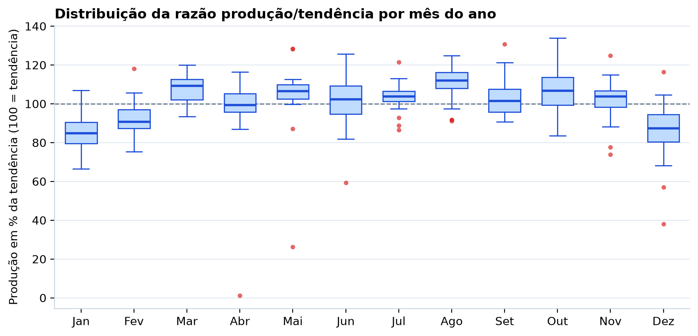
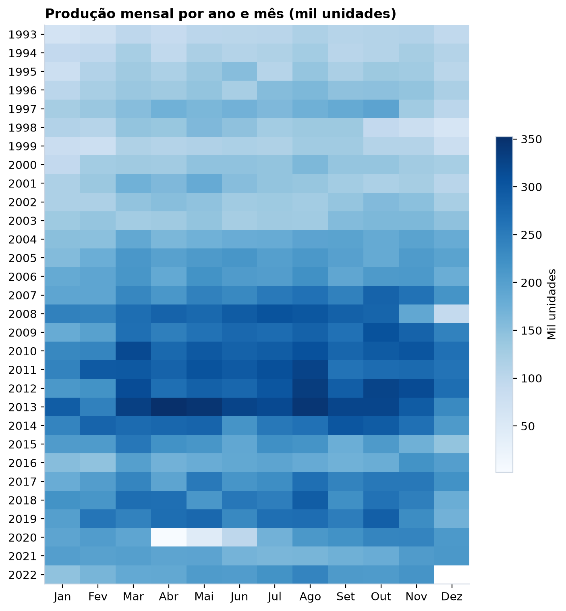

A indústria automotiva é um dos setores mais sensíveis ao ciclo econômico brasileiro, e sua produção mensal funciona como termômetro da atividade industrial. Este artigo analisa a série de produção de veículos automotores divulgada pela ANFAVEA e distribuída pelo Banco Central do Brasil (SGS 1373), com 359 observações mensais entre janeiro de 1993 e novembro de 2022. Construímos um pipeline determinístico em Python (pandas) que lê o arquivo bruto, valida tipos e continuidade do calendário, deriva métricas de tendência, sazonalidade e resíduo, e persiste o resultado em Parquet. A análise exploratória mostra três achados. Primeiro, a produção anual mais que triplicou entre 1993 e o pico de 2013 (de 1,17 para 3,71 milhões de unidades), recuou 41,4% até 2016 e não retornou ao pico até o fim da série. Segundo, há sazonalidade estatisticamente significativa: janeiro, fevereiro e dezembro ficam de 10% a 16% abaixo da tendência, enquanto agosto e março ficam cerca de 10% acima. Terceiro, os choques diferem em forma: a pandemia de 2020 foi o mais profundo e o mais curto, e a retração iniciada em 2013 é a mais longa. Todo o código, os dados e este texto estão disponíveis em repositório público, em conformidade com os princípios FAIR.
A cadeia automotiva ocupa posição central na indústria de transformação brasileira: mobiliza montadoras, autopeças, siderurgia, crédito e uma extensa rede de concessionárias. Por depender de bens duráveis de alto valor, comprados em geral a prazo, a produção de veículos reage rapidamente a mudanças em juros, renda, câmbio e política tributária. Por isso a série é acompanhada de perto pelo governo, pelas empresas da cadeia e por quem analisa a atividade industrial.
Apesar de a série ser pública, ela costuma ser consumida em recortes curtos, comparando um mês com o anterior. O problema é que essa comparação mistura três coisas: a tendência de longo prazo, o padrão sazonal que se repete todo ano e os choques pontuais. Um recuo em janeiro, por exemplo, pode ser apenas o efeito esperado das férias coletivas. Neste trabalho tentamos separar esses componentes com um pipeline que qualquer pessoa consiga rodar de novo.
O estudo responde a três perguntas de pesquisa:
O conjunto de dados é o arquivo bcdata.sgs.1373.csv, publicado no Kaggle por Bernardo (2022). Ele
reproduz a série 1373 do Sistema Gerenciador de Séries Temporais (SGS) do Banco Central do Brasil, cuja fonte
primária é a Associação Nacional dos Fabricantes de Veículos Automotores (ANFAVEA). A granularidade é mensal e
nacional: cada linha traz uma data (primeiro dia do mês) e o total de veículos produzidos naquele mês. São 359
linhas, de janeiro de 1993 a novembro de 2022, sem desagregação por montadora, segmento ou estado.
Um detalhe que quase passou despercebido: o título do dataset no Kaggle fala em "valor da produção", mas a coluna
valor registra quantidade física (unidades produzidas), e não valor monetário. Por isso a variável foi
renomeada para producao no dado tratado, e o dicionário de dados documenta a unidade.
utf-8-sig e latin-1 e detecta o separador com csv.Sniffer, em vez de fixá-los no código.%d/%m/%Y (evitando a inversão dia/mês do padrão americano) e a produção vira inteiro anulável (Int64), após remoção de eventual separador de milhar.relatorio_qualidade.json. A série é reindexada em um calendário mensal completo, de modo que um mês faltante apareceria como linha nula, sem ser inventado. Nesta base, todos os contadores resultaram em zero, e nenhuma imputação ou descarte foi necessário.# src/etl.py (trecho): leitura como texto e tipagem explícita
bruto = pd.read_csv(caminho, sep=separador, encoding=codificacao,
dtype=str, quotechar='"')
df = pd.DataFrame({
"data": pd.to_datetime(bruto["data"].str.strip(),
format="%d/%m/%Y", errors="coerce"),
"producao": _para_inteiro(bruto["valor"]), # Int64 anulável
})
# Calendário completo: mês ausente vira linha nula, visível na análise
calendario = pd.date_range(df["data"].min(), df["data"].max(), freq="MS")
df = df.set_index("data").reindex(calendario).rename_axis("data").reset_index()Para separar tendência, sazonalidade e choques, adotamos a decomposição clássica multiplicativa (Hyndman; Athanasopoulos, 2021). A tendência é estimada por média móvel centrada 2x12. A razão entre a produção e a tendência isola o componente sazonal somado ao irregular. O índice sazonal de cada mês é a mediana dessa razão, normalizada para média 100. Optamos pela mediana porque a média seria distorcida por abril de 2020, quando a produção quase zerou.
O resíduo é o desvio percentual da produção dessazonalizada frente a uma mediana móvel centrada de 13 meses. Os outliers seguem a regra de Tukey (1977): pontos além de 1,5 vez o intervalo interquartil do resíduo. Para medir ciclos, usamos o acumulado em 12 meses, que elimina a sazonalidade por construção, e a sua distância percentual em relação ao pico histórico anterior.
# src/etl.py (trecho): sazonalidade robusta e sinalização de outliers
df["tendencia"] = media_movel_centrada_12m(producao) # MM 2x12
df["razao_tendencia"] = producao / df["tendencia"]
sazonal = df.groupby("mes")["razao_tendencia"].median()
sazonal = sazonal / sazonal.mean() * 100
df["indice_sazonal"] = df["mes"].map(sazonal)
df["producao_dessaz"] = producao / (df["indice_sazonal"] / 100)
df["tendencia_robusta"] = df["producao_dessaz"].rolling(13, center=True).median()
df["residuo_pct"] = (df["producao_dessaz"] / df["tendencia_robusta"] - 1) * 100
q1, q3 = df["residuo_pct"].quantile([0.25, 0.75])
iqr = q3 - q1
inferior, superior = q1 - LIMITE_IQR * iqr, q3 + LIMITE_IQR * iqr
df["outlier"] = (df["residuo_pct"] < inferior) | (df["residuo_pct"] > superior)
O dado tratado, com 17 variáveis, é persistido em Apache Parquet (preserva a tipagem colunar) e em
CSV comprimido com gzip (leitura universal). As métricas agregadas e as figuras são geradas por
src/analise.py, e os gráficos interativos desta página leem diretamente o arquivo exportado por esse
módulo, de modo que texto e visualizações partem da mesma fonte.
Nos 359 meses analisados foram produzidos 69,3 milhões de veículos. A produção mensal tem média de 192.962 unidades, mediana de 190.099 e desvio padrão de 67.440, o que resulta em coeficiente de variação de 35,0%. O intervalo vai de 1.847 unidades (abril de 2020) a 352.328 (abril de 2013). Essa dispersão elevada reflete sobretudo a mudança de patamar ao longo de três décadas, discutida a seguir.
A Figura 1 mostra que a série não cresce de forma linear: ela alterna fases longas de expansão e retração. A leitura anual (Figura 2) permite delimitar cinco fases.
O pico de 2013 representa 3,17 vezes o volume de 1993, ou 5,9% de crescimento médio anual em vinte anos. O que mais chama atenção, porém, é que esse pico não foi recuperado: em novembro de 2022 o acumulado em 12 meses era de 2,39 milhões de unidades, 36,7% abaixo do máximo de 3,77 milhões registrado em setembro de 2013. A indústria encerra a série produzindo em patamar semelhante ao de 2005 e 2006.
Há um padrão sazonal claro (Figura 3). Janeiro (84,2), dezembro (86,7) e fevereiro (90,1) ficam entre 10% e 16% abaixo da tendência. Os meses mais fortes são agosto (111,3) e março (108,6), seguidos por outubro e maio (105,9 cada). A amplitude entre o mês mais forte e o mais fraco é de 27,1 pontos. O teste de Kruskal-Wallis rejeita a hipótese de que os doze meses tenham a mesma distribuição (H = 138,7; p < 0,001), e o mês do ano explica 30,7% da variância da razão entre produção e tendência.
Isso bate com o funcionamento do setor. As férias coletivas concentram-se entre a segunda quinzena de dezembro e o início de janeiro, e fevereiro tem menos dias úteis e, em geral, o Carnaval. Março e agosto, por sua vez, são meses longos e sem grandes feriados, que sucedem períodos de produção reduzida.

A Figura 4 mostra também a dispersão: alguns meses são bem mais regulares que outros. Julho e maio têm caixas estreitas, enquanto junho, outubro e dezembro variam mais de um ano para outro. Para avaliar a estabilidade do padrão, recalculamos o índice em três subperíodos (Tabela 1).
| Período | Jan | Fev | Mar | Abr | Mai | Jun | Jul | Ago | Set | Out | Nov | Dez |
|---|
O formato geral se mantém (vale em dezembro, janeiro e fevereiro; picos em março e agosto), mas há três mudanças graduais. O vale de virada de ano ficou mais raso: janeiro passou de 79,0 para 86,5 e dezembro de 80,8 para 89,6. Novembro deixou de ser um mês fraco (95,2) e tornou-se forte (107,5). Junho fez o caminho inverso, de 108,8 para 93,8. O último número deve ser lido com cautela, pois o subperíodo de 2013 a 2022 inclui anos atípicos, como 2014 (Copa do Mundo no Brasil, em junho e julho) e 2020 (junho ainda sob efeito das paralisações da pandemia).

A Figura 6 e a Tabela 2 resumem os três ciclos de queda superiores a 10% no acumulado em 12 meses. Eles têm perfis bem diferentes. A retração do fim dos anos 1990 foi profunda (35,3%) e lenta para se desfazer: o nível de outubro de 1997 só foi retomado em julho de 2004, quase sete anos depois. A crise de 2008 foi a mais branda nessa métrica (13,8%) e a mais rápida, com recuperação em 20 meses. Já a queda iniciada em setembro de 2013 é a maior e a mais longa: atingiu 47,9% em outubro de 2020 e seguia aberta 110 meses depois, no fim da série.
| Pico | Acum. 12m no pico | Vale | Queda | Meses até o vale | Recuperação do pico | Meses até recuperar |
|---|
Repare que a pandemia não aparece como ciclo separado na tabela: ela atingiu a indústria quando esta ainda estava 22% abaixo do pico de 2013 e aprofundou uma retração já existente. Para comparar os dois choques abruptos da série, medimos a queda da produção dessazonalizada frente à média dos três meses anteriores (Tabela 3).
| Choque | Mês de fundo | Produção no fundo | Queda dessaz. | Variação em 12 meses | Retomada do nível | Meses abaixo |
|---|
Em dezembro de 2008 foram produzidas 91.314 unidades, 57,9% a menos que em dezembro de 2007, e o nível anterior ao choque só foi retomado em outubro de 2009. O período coincide com a redução do IPI para automóveis, adotada a partir de dezembro de 2008. Em abril de 2020, com as fábricas paradas, a produção foi de apenas 1.847 unidades (queda de 99,3% em 12 meses), o menor valor de toda a série. A retomada, porém, foi mais rápida: o nível dessazonalizado anterior voltou em setembro de 2020. Ou seja, o choque da pandemia foi mais profundo, mas durou menos. A fraqueza de 2021, visível na Figura 1, tem outra natureza: o setor relatou restrições de oferta, em especial a escassez de semicondutores.
A regra de Tukey sinaliza 16 dos 359 meses como outliers (Figura 7), sendo 10 negativos e 6 positivos. Os negativos
se agrupam em torno dos choques conhecidos: novembro e dezembro de 1998, novembro e dezembro de 2008 e abril a julho
de 2020. Os meses não sinalizados ficam entre 20,8% abaixo e 19,8% acima da tendência. Parte dos outliers positivos
(dezembro de 2020, janeiro e dezembro de 2021) indica meses de virada de ano mais fortes que o padrão histórico, o
que é compatível com a recomposição de estoques após as paralisações. Esses pontos foram mantidos na base e apenas
marcados na coluna outlier, pois são eventos reais, e não erros de medição.
Voltando às três perguntas de pesquisa. Quanto à RQ1, a produção de veículos seguiu ciclos longos: mais que triplicou entre 1993 e 2013, mas perdeu 41,4% entre 2013 e 2016 e terminou 2022 ainda 36,7% abaixo do pico. Quanto à RQ2, existe sazonalidade significativa e relativamente estável, com vale entre dezembro e fevereiro e picos em março e agosto, embora o vale de fim de ano tenha se atenuado. Quanto à RQ3, os choques diferem em forma: 2008 foi abrupto e de recuperação rápida, 2020 foi o mais profundo e o mais curto, e a retração de 2014 a 2016 foi a mais duradoura.
Limitações. A base é univariada e agregada: não distingue automóveis, comerciais leves, caminhões e ônibus, nem montadoras ou estados. As associações com eventos econômicos são interpretações apoiadas na coincidência temporal, e não inferência causal. A decomposição clássica supõe sazonalidade fixa dentro de cada janela e perde os seis meses de cada extremidade da tendência. A série não foi ajustada por dias úteis, e 2022 está incompleto. Por fim, o recorte termina em novembro de 2022.
Trabalhos futuros. O primeiro passo seria atualizar a série pela API do SGS, o que o pipeline já permite. Depois, cruzar a produção com juros (Selic), crédito e câmbio para entender o que puxa os ciclos, e testar modelos de previsão como o SARIMA. Também seria interessante separar a análise por segmento, usando os anuários da ANFAVEA.
README.md contendo resumo executivo, palavras-chave, autoria, disciplina, semestre, instituição e links perenes para a fonte original (Kaggle e série SGS 1373 do Banco Central).data/raw/ e, se ausente, é baixado da API aberta do Banco Central. O artigo é servido pelo GitHub Pages em layout responsivo.data/data_dictionary.md com significado, tipo e formato de cada variável. Dados tratados em Parquet e CSV comprimido (gzip), com datas em ISO 8601.requirements.txt com versões fixadas, e o pipeline é determinístico.Para reproduzir integralmente o pipeline, da leitura do dado bruto às figuras deste artigo:
# 1. Clonar o repositório
git clone https://github.com/marcelobfb/producao-veiculos-brasil.git
cd producao-veiculos-brasil
# 2. Criar e ativar o ambiente virtual (Python 3.13)
python -m venv .venv
source .venv/bin/activate # Windows: .venv\Scripts\activate
pip install -r requirements.txt
# 3. Executar o ETL (bruto -> data/processed)
python -m src.etl
# 4. Gerar métricas, figuras e dados dos gráficos (-> docs/assets)
python -m src.analise
# 5. (Opcional) Reexecutar o notebook exploratório
jupyter nbconvert --to notebook --execute --inplace notebooks/analise_exploratoria.ipynb
# 6. Visualizar o artigo localmente
python -m http.server --directory docs 8000 # abrir http://localhost:8000